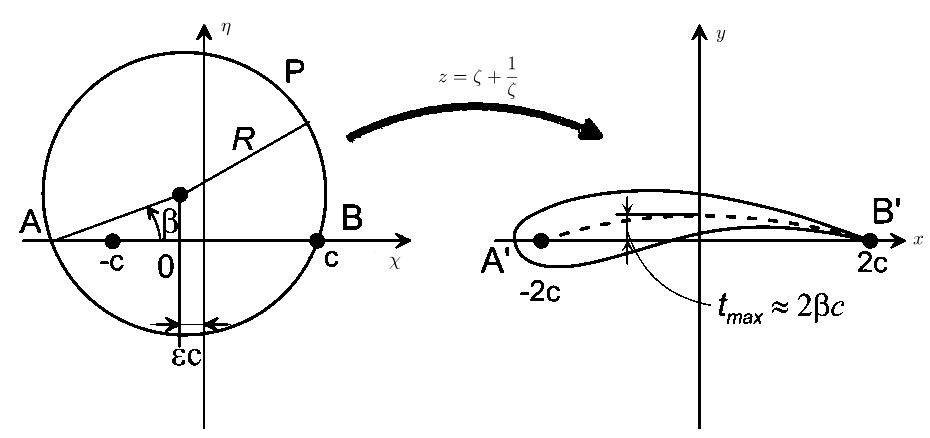

Joukowsky airfoil transform
Joukowsky transform is a conformal map described by equation: \[z = \zeta + {{1} \over {\zeta }}\] where \( z = x + iy \) is a complex variable in the new space and \( \zeta = \chi + i\eta \) is a complex variable in the original space.
The transform is used to solve to generate Joukowsky airfoil in complex plane (\(x\)-plane) by applying the Joukowsky trnasform to a circle in the \(\zeta\)-plane.
Mapping of the circle described as: \[ |\zeta-(-\epsilon c + ia \cdot tan(\beta))| = ({a \over cos(\beta)})^2 \] where \( a = c (1 + \epsilon) \).
